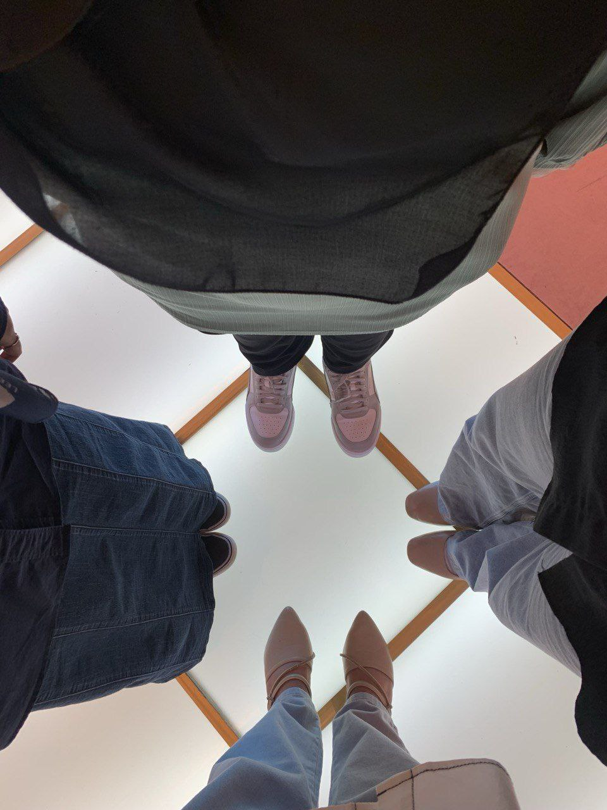
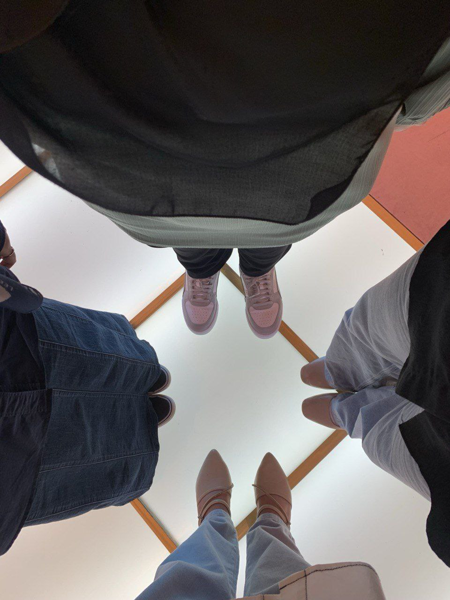
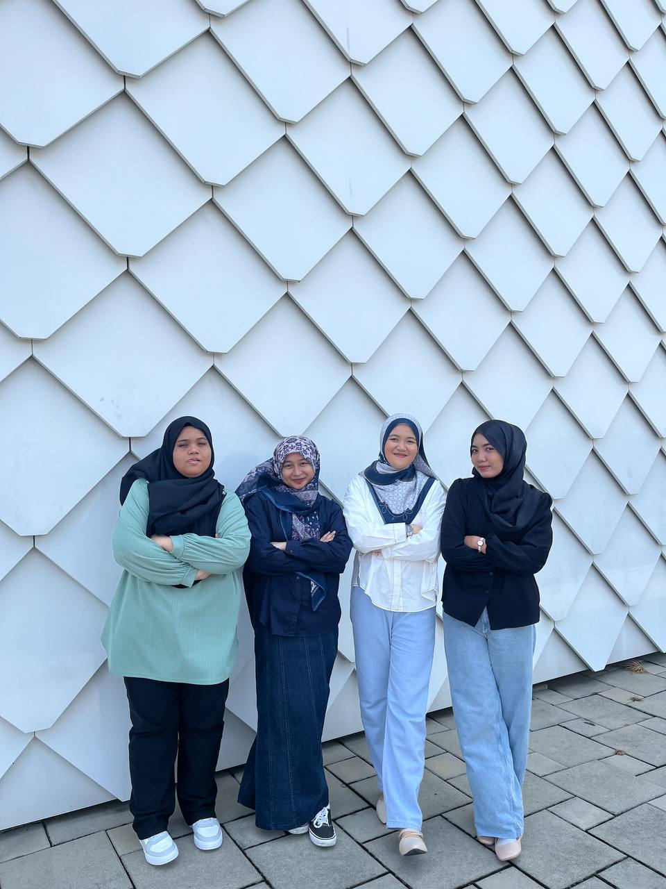
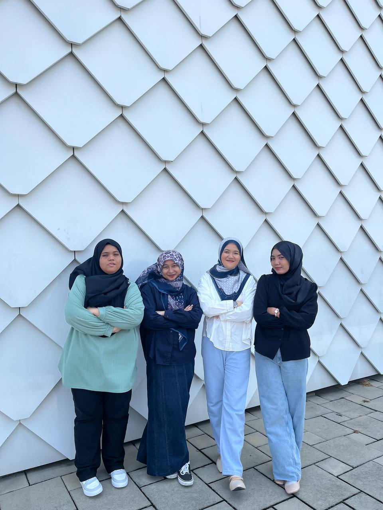

Here is the exterior view of the COACH Airways, and personally, I really like the design on the aircraft. It gives off a feeling of luxury and elegance.
In my opinion, using this plane to attract people to make purchases here is a smart move, showing my ability to spot opportunities and capture the attention of the public.
My experience when I first entered was truly captivating. The interior design was equally stunning, with a wide variety of handbags beautifully displayed on the shelves.
It was the perfect setting for anyone looking to purchase a handbag from this prestigious brand.
The atmosphere inside also plays a crucial role, as the lighting, decorations, and other details truly give it an airplane-like feel.
I felt as though the place was inviting me to stay and never leave, creating a sense of comfort and allure that was hard to resist.
In addition, COACH Airways also offers a designated spot for OOTD photos at the front, providing an opportunity for the public to take pictures and create lasting memories after entering the store.
Luxury begins here, where sophistication meets indulgence and excellence never ends.

 



 
